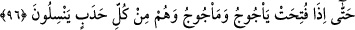
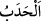
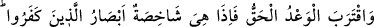
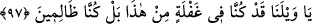

sebebiyle hevâ ve helâk edici bid‘atların ehlinin kalblerine işâret etmektedir.
Çünkü onlar, yaptıklarından ötürü Allah’a tevbe etmezler ve aslâ hakka dönmezler.
Nitekim şu âyet bu yorumun doğruluğuna delâlet etmektedir: “Hevâ ve hevesini ilah
edinen ve Allah’ın bir bilgiye göre saptırdığı… kimseyi gördün mü?” (el-Câsiye,
45/23)
96. Nihâyet Ye’cûc ve Me’cûc (sedleri) açıldığı ve onlar her tepeden akın ettiği
zaman;
“Nihâyet Ye’cûc ve Me’cûc (sedleri) açıldığı” Sanki burada şöyle denilmektedir:
‘Onların helâkinden sonra pek çok vakit geçip de kıyâmet koptuğu vakit onlar bize
döndürülürler ve: “Yazıklar olsun bize! (derler), gerçekten biz, bu durumdan
habersizmişiz; hatta biz zalim kimselermişiz.” (el-Enbiyâ 21/97)
Ye’cûc ve Me’cûc insanlardan iki kabîledir. İnsanların on kısım olduğu ve bunlardan
dokuzunun Ye’cûc ve Me’cûc olduğu da söylenmiştir. Onların sedlerinin açılmasından
murad ise önlerini kapatan seddin açılmasıdır. Kehf sûresinde geçen Ye’cûc ve Me’cûc
kıssasında onlara sed inşâ edilmesi ve âhir zamanda bunun nasıl açılacağı anlatılmıştır.
“Ve onlar” Ye’cûc ve Me’cûc “her” yüksek yerden ve “tepeden akın etmeye”
süratle inmeye “başladıkları zaman,”
Râgıb der ki: “
” kelimesinin aslının sırttaki kamburluk anlamında olması da
mümkündür. Kamburluk, sırtın çıkıp yükselmesi, göğüs ve karnın içeri gitmesidir. Sonra
yüksek olan her yer ona benzetilmiştir
Rivâyete göre onlar (Ye’cûc ve Me’cûc) yeryüzüne dağılırlar ve her yüksek yerden
insanlara yönelirler.”
Kâşifî der ki: “Onlar bütün âlemi kaplarlar, denizlerin suyunu tamamen içerler, yaş
kuru ne bulurlarsa yerler.”
97. Ve gerçek vaad (ölüm, kıyâmet) yaklaşınca, birden, inkâr edenlerin gözleri
donakalır! “Yazıklar olsun bize! Gerçekten biz, bu durumdan habersizmişiz; hatta
biz zalim kimselermişiz. (derler.)”
“Ve gerçek vaad yaklaşınca,” ‘gerçek vaad’den maksad, ikinci defa sûra üflendikten
sonra olacak yeniden diriltilme, hesab ve yapılanların karşılığının verilmesidir.
“Birden, inkâr edenlerin gözleri donakalır!”